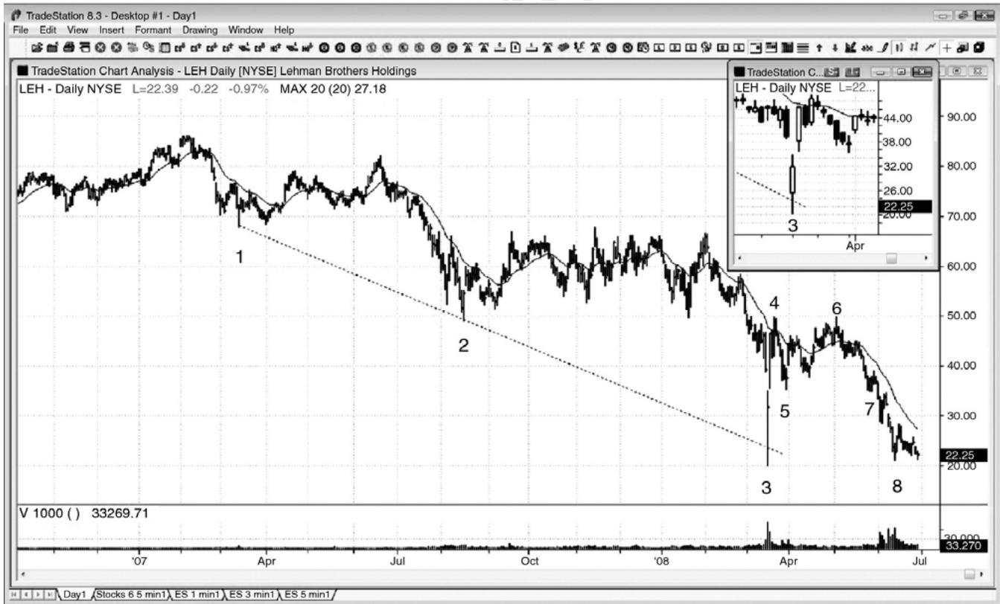
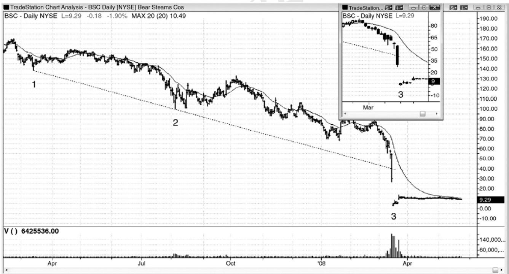

第10章 日线图上的巨量反转¶
图 10 日线图上的巨量反转
在日线图上，当一只股票处于陡峭的空头趋势中，然后有一天成交量达到近期平均成交量的 5 到 10 倍时，多头可能已经投降，一个可交易的底部可能正在形成。巨量交易日常常是下跌缺口日，如果那一天有一个强多头收盘，那么多头交易获利的几率增加。交易者们不必寻找多头反转，但是，在一波高潮卖出之后，至少形成两条腿运动，至少到达均线，允许交易者们做一笔持续几天到几周的交易的几率很高。
顺便提一句，在 1 分钟电子迷你图表上，如果市场正处于一轮强空头趋势之中，如果成交量异常放大（大约 25,000 张合约），那么很可能不是空头趋势的结束，但常常是回撤在即的征兆，通常是在一两个成交量较少的更低低点之后（成交量背离）。在日内图表上，尽量少看成交量，因为它的预测价值在 5 分钟图上是不可靠的，而 5 分钟图是你应主要用于交易的图表。

有时，市场在巨量日向上反转。如图 10.1 所示，雷曼兄弟（Lehman Brothers，LEH）在棒 3 以一个巨型下跌缺口开盘，然后向下突破一条空头趋势通道线（从棒 1 到棒 2），但是强势反弹进入收盘。成交量是前一天的3倍，大约为上月平均成交量的10倍。面对这样强的一条多头趋势棒（在插入的 K 线图上看得更清楚），在它的收盘价买进是安全的，但是，更加谨慎的交易者可能会等到市场超越这条可能的信号棒的高点。市场在次日向上跳空。交易者可能已经在开盘买进，等待向下测试，然后在一个新的日内高点买进，或者在 5 分钟图上寻找抛盘，然后在尝试回补缺口失败后的向上反转买进。这种强势形态之后几乎总是至少两条腿的上涨（截止棒6的第二条上涨腿，形成于成功的棒5缺口测试更高低点之后），而且会刺穿均线。
棒 4 和棒 6 形成一个双重顶空头旗形。
棒 7 尝试与棒 5 形成一个双重底多头旗形，但结果却在两棒之后形成一个突破回撤做空入场。
在图中最后一棒，市场正在测试棒 3 低点，试图防御棒 3 低点下方的止损，并形成一个双重底。数月之后，LEH破产。
P148

大跌日的巨量并不保证市场一定会反弹。如图 10.2 所示，贝尔斯登（Bear Stearns，BSC）在周五形成一条巨大的空头趋势棒，成交量约为一般情况下的 15 倍。该股在前两周跌去了约70%。然而，成交量仅为前一天的 1.5 倍，而且只有一条很短的上尾线。价格行为对多头不利，因为突破空头趋势通道之后没有反转。实际上，巨型空头趋势棒的收盘价远低于那条线，确认了趋势通道线的力量未能包含住空头趋势。该股在周一（棒 3）开盘时又跌去了 80%，但是成交量略有降低。在周五收盘买进的交易者们，认为市场处于高潮底部，作为美国第五大的投资银行和经纪公司，不可能继续下跌，他们的观点在周一被推翻。在没有看涨价格行为的情况下，高潮成交量不会令一轮强空头趋势逆转。
这张图表的时间与前一 LEH 图表相同。不过，LEH 图表在周一之前没有突破突破趋势通道线（棒 3），而且在那一天巨量向上反转。这里，在 BSC 图表上，巨量日是在前一天，也向下突破了空头趋势通道线，但是那一天收盘于最低价附近，没有看涨的价格行为。BSC 在棒 3向下跳空，这一点与LEH一样（对于两只股票来说，棒3都是周一），但是，LEH强势反弹，而 BSC 根本没有反弹。BSC 的棒 3 仍然是一条多头反转棒，形成于突破空头趋势通道线之后，但是，那一天在 LEH 和 BSC 之间选择买进的任何一位交易者，显然更倾向于买进 LEH，因为它有一条非常强的多头反转棒。即便交易者在棒 3 上方 1 个跳动买进 BSC，他们在接下来三天的收益也会超过 100%，但是 LEH 显然是一个更加确定的多头架构。
自从这张图表被打印出来之后，BSC在几个月前被摩根大通（JPMorgan Chase，JPM）以只占其资本微小比例的价格收购。
P149
第二部分 日内交易
如果你仍然未能稳定获利，那么你就不应把电子迷你中一两点的刮头皮或股票中 10 到20 美分的刮头皮作为交易的基石。实际上，你应该避免做刮头皮交易，直到你成为一名经验丰富的交易者，原因是你需要非常高的胜率才能稳定获利，而即便经验丰富的交易者也很难保持非常高的胜率。
在日内交易中，首先要选择市场和你希望使用的图表类型。最好是交易机构喜欢的股票，因为你希望降低专家或造市商的操纵几率，同时，你希望滑移价差最小。任意包含 5 到 10 只股票的一篮子股票，每天都会提供非常多很棒的交易，所以你不必去求助那些成交量很低的股票，那可能带来附加风险。
一天当中，棒线越多，你就可以做越多交易，每笔交易的风险也将越低。然而，你的读图速度可能不足以看清架构，你可能没有时间在可接受的错误水平设定交易。另外，一些最佳交易发生得如此迅速，以至于你很可能错过很多，然后抓住一些获利性低的交易。你必须根据自己的个性和交易能力确定一个数学的“最有效击球点”。大部分成功交易者能够使用 5分钟K线图交易。3分钟图上的价格行为非常类似，会提供更多交易，而且需要较小的止损，但是一般胜率较低。如果你发现自己错过太多交易，特别是一天中最具获利性的交易，那么你应该考虑切换到一个较慢的时间框架，比如 15 分钟图。
你也可以使用基于成交量（比如每一棒代表 25,000 张合约）或跳动数（比如每一棒代表5,000 个价格变化或跳动）的图表，或者就用棒线图。线图也可用于交易，但是当价格行为交易者看不到棒线或K线时，他们将放弃太多信息。
一般而言，由于当你做日内交易时你的每笔交易的风险是最小的，所以你应该交易最大数量的合约。引用沃伦·巴菲特的一句话，“如果它值一便士，那么它就值一角。”一旦稳定获利的交易者已经决定自己有一个正确的入场，那么他们需要准备交易合理数量的合约。
交易者们一直在考虑利润最大化的最佳方法，两个最重要的考虑因素是交易选择和头寸规模。对于新手来说，应该把注意力主要集中在每天只把最好的 2 到 5 个入场波段化上，在非趋势日（可能 80%的交易日都是非趋势日），通常是新的波段高点或低点处反转形式的二次入场，在趋势日，通常是尖峰和回撤。一旦交易者能够稳定获利，那么下个目标就应该是增加头寸规模，而不是增加胜率较低的入场。如果一位交易者能够每天在电子迷你中净赚1点，但是交易 25 张合约，那么结果就是每天$1,000 以上的收益。如果那位交易者增加到 100 张合约，那么他每年将赚到$1,000,000。如果他每天净赚 4 点，那就是每年$4,000,000。电子迷你和国库券市场能够轻易处理这种规模的交易。对于价格在$100以上的流动性非常好的股票，经验丰富的交易者能够在大多数交易日中每天净赚 50 美分，这些股票能够在最小滑移价差的情况下应对 1,000 到 3,000 股。像 QQQ 这样的交易所交易基金（ETF）能够处理 10,000股订单，但是日区间较小，对于优秀交易者来说，比较现实的净利润约为 10 到 20 美分，一年一二十万美元。
如果交易者管理着$50,000,000 的基金，每笔交易 1,000 张电子迷你合约（他可能必须把订单分割为200到400手的小订单），而且每天只净赚1点，那么在除去各项费用之前将为客户创造$10,000,000。集中精力选择最佳交易，然后加大交易规模。
P150